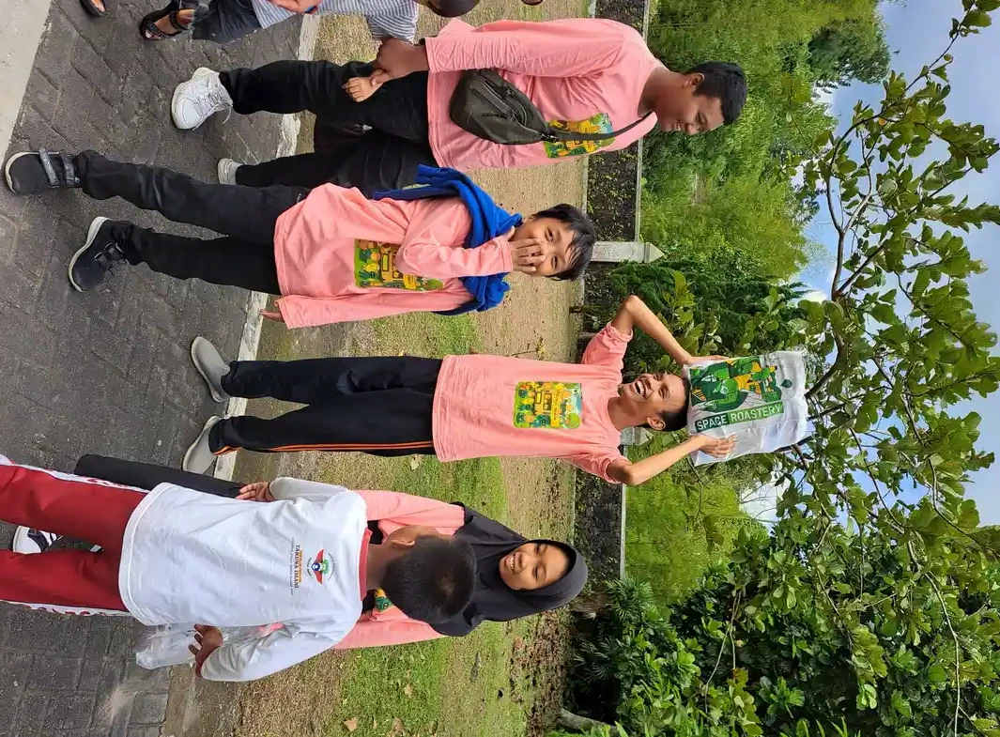
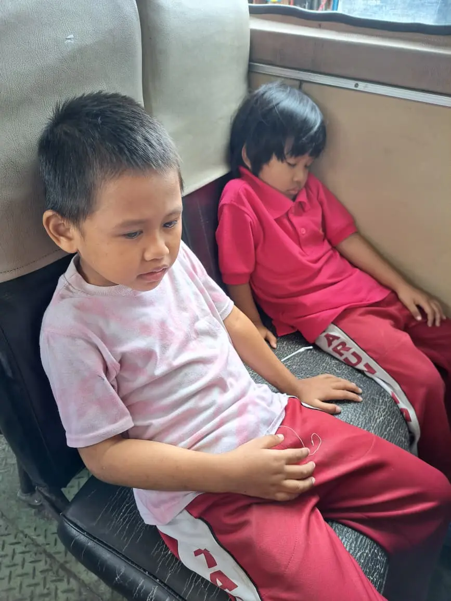

Kalimat "anakku hiperaktif" biasanya lahir dari rasa lelah sekaligus khawatir: anak seperti tidak pernah kehabisan energi, sulit duduk tenang, dan sering ditegur di mana-mana. Jika Anda sedang berada di titik itu, artikel ini ditulis untuk Anda. Ini bukan pembahasan teori, melainkan panduan langkah demi langkah tentang apa yang bisa orang tua lakukan mulai hari ini.
Untuk pengertian, ciri, dan penyebab hiperaktivitas secara lengkap, kami sudah membahasnya di artikel hiperaktif: ciri, penyebab, dan cara menangani. Artikel ini mengambil sudut pandang yang berbeda: sudut pandang Anda sebagai orang tua, mulai dari cara mengamati perilaku anak, kapan dan ke mana mencari bantuan profesional, sampai cara menata rumah, sekolah, dan energi Anda sendiri.
Satu hal yang perlu dipegang sejak awal: anak yang sangat aktif bukan anak nakal, dan orang tua yang kewalahan bukan orang tua yang gagal. Yang Anda butuhkan adalah strategi yang tepat dan dukungan yang cukup.
Daftar Isi
- Anak Aktif atau Hiperaktif: Bagaimana Membedakannya?
- Langkah 1: Amati dan Catat Perilaku Anak
- Langkah 2: Konsultasikan ke Profesional yang Tepat
- Langkah 3: Tata Rutinitas dan Lingkungan Rumah
- Langkah 4: Salurkan Energi ke Aktivitas Terarah
- Langkah 5: Bangun Kerja Sama dengan Sekolah
- Langkah 6: Rawat Diri Anda Sendiri
- Kesalahan Umum yang Perlu Dihindari
- FAQ Pertanyaan Orang Tua
Anak Aktif atau Hiperaktif: Bagaimana Membedakannya?
Hampir semua anak usia dini senang bergerak, dan itu sehat. Perbedaannya ada pada tiga hal: intensitas, kemampuan berhenti, dan dampak. Anak yang aktif dapat berhenti bermain saat diminta, mampu duduk untuk kegiatan yang ia sukai, dan aktivitasnya tidak membahayakan diri sendiri. Anak hiperaktif tampak digerakkan oleh mesin: sulit berhenti bahkan untuk hal yang ia sukai, bergerak tanpa tujuan jelas, dan sering bertindak tanpa berpikir sehingga rawan cedera.
Kementerian Kesehatan RI menjelaskan bahwa hiperaktivitas dan impulsivitas yang menetap merupakan bagian dari gejala ADHD (Attention Deficit Hyperactivity Disorder), bersama dengan kesulitan memusatkan perhatian. Namun tidak semua anak yang sangat aktif otomatis ADHD. Kurang tidur, kecemasan, pola pengasuhan yang berubah-ubah, sampai terlalu banyak waktu layar juga bisa membuat anak tampak "tidak bisa diam". Perbedaan detailnya kami ulas di artikel ADHD: gejala, diagnosis, dan penanganan.
Karena penyebabnya beragam, tugas orang tua bukan menegakkan diagnosis sendiri, melainkan mengumpulkan informasi yang akurat lalu membawanya ke profesional. Dua langkah pertama di bawah ini fokus pada hal tersebut.
Inti Singkat
Anak aktif mampu berhenti dan fokus pada hal yang disukai; anak hiperaktif sulit berhenti, bergerak tanpa tujuan, dan impulsif hingga mengganggu belajar, pertemanan, atau keselamatannya. Jika ragu, catat perilakunya selama dua minggu lalu konsultasikan ke dokter anak atau psikolog.
Langkah 1: Amati dan Catat Perilaku Anak
Sebelum bertemu profesional, jadilah pengamat yang baik selama satu sampai dua minggu. Siapkan catatan sederhana di ponsel atau buku, lalu tulis: perilaku apa yang muncul, kapan terjadinya, di mana, apa yang terjadi sebelum dan sesudahnya, serta berapa lama berlangsung. Misalnya: "Senin pagi, mengamuk dan berlari keliling rumah 20 menit setelah diminta berhenti menonton" atau "Di pengajian, tidak bisa duduk lebih dari 3 menit".
Catat juga sisi sebaliknya: kapan anak bisa tenang dan fokus? Saat menggambar? Saat bermain balok? Saat bersama orang tertentu? Informasi ini sama berharganya, karena menunjukkan kondisi yang mendukung anak. Lengkapi dengan pola tidur, pola makan, durasi layar per hari, dan aktivitas fisik. Banyak orang tua terkejut menemukan pola setelah mencatat, misalnya anak paling sulit diatur di hari-hari ketika tidurnya kurang.
Mintalah juga observasi dari orang lain yang sering bersama anak: guru, pengasuh, atau kakek nenek. Perilaku yang muncul di dua tempat atau lebih (rumah dan sekolah) adalah salah satu hal yang akan ditanyakan profesional. Catatan dua minggu ini akan membuat sesi konsultasi Anda jauh lebih efektif daripada datang hanya dengan ingatan samar.
Langkah 2: Konsultasikan ke Profesional yang Tepat
Titik masuk yang paling mudah adalah dokter anak, baik di puskesmas maupun rumah sakit. Dokter akan memeriksa kondisi fisik anak, menyingkirkan penyebab medis lain seperti gangguan tidur atau masalah pendengaran, lalu bila perlu merujuk ke psikolog anak, dokter spesialis kesehatan jiwa anak, atau dokter spesialis anak konsultan tumbuh kembang untuk asesmen lebih menyeluruh.
Dalam asesmen, profesional biasanya menggali riwayat kehamilan dan kelahiran, riwayat perkembangan, perilaku di berbagai situasi, serta menggunakan instrumen penilaian yang terstandar. Proses ini membutuhkan lebih dari satu pertemuan, dan itu wajar. Gambaran lengkap prosesnya bisa Anda baca di artikel asesmen anak berkebutuhan khusus. Hasil asesmen akan menentukan apakah anak membutuhkan terapi perilaku, penyesuaian pola asuh, terapi penunjang seperti terapi okupasi, atau kombinasi beberapa pendekatan.
Hindari dua ekstrem yang sama-sama merugikan: menunda konsultasi bertahun-tahun karena berharap anak "nanti juga berubah", atau langsung melabeli anak ADHD dari hasil membaca internet. Diagnosis hanya boleh ditegakkan profesional; peran Anda adalah memastikan anak sampai ke ruang konsultasi dengan data yang lengkap. Bila Anda berada di Yogyakarta dan bingung harus mulai dari mana, tim kami membuka layanan konsultasi anak berkebutuhan khusus di Sleman sebagai langkah awal memetakan kebutuhan anak.
Langkah 3: Tata Rutinitas dan Lingkungan Rumah
Anak dengan energi tinggi lebih mudah diatur ketika harinya dapat diprediksi. Buat jadwal harian yang konsisten: jam bangun, makan, bermain, belajar, mandi, dan tidur yang kurang lebih sama setiap hari. Sampaikan perubahan rencana sebelum terjadi, bukan mendadak. Untuk anak yang belum lancar membaca, jadwal bergambar sangat membantu; cara membuatnya bisa Anda tiru dari artikel jadwal visual untuk rutinitas anak, karena prinsipnya sama efektifnya untuk anak hiperaktif.
Berikan instruksi dengan cara yang mudah dicerna: satu perintah dalam satu waktu, kalimat pendek, dan kontak mata. "Simpan sepatu di rak" lebih berhasil daripada "Ayo beres-beres, simpan sepatu, cuci tangan, terus ganti baju". Setelah satu tugas selesai, baru berikan tugas berikutnya, dan jangan lupa apresiasi spesifik: "Terima kasih, sepatunya sudah rapi di rak".
Kurangi pemicu di lingkungan: matikan televisi saat waktu belajar, sediakan sudut belajar yang minim gangguan, simpan mainan dalam wadah tertutup agar tidak semua terlihat sekaligus, dan batasi waktu layar sesuai usia. Pastikan juga kebutuhan dasarnya terpenuhi: tidur cukup, sarapan sebelum beraktivitas, dan kesempatan bergerak sebelum kegiatan yang menuntut duduk tenang.
Langkah 4: Salurkan Energi ke Aktivitas Terarah

Energi besar anak hiperaktif bukan musuh; ia hanya butuh saluran. Pastikan anak mendapat aktivitas fisik setiap hari: berlari di halaman, bersepeda, berenang, bermain bola, atau sekadar berjalan kaki bersama. Aktivitas fisik yang cukup di siang hari juga membantu tidur malam yang lebih nyenyak, dan tidur yang baik membantu pengendalian diri keesokan harinya. Lingkaran ini sederhana tetapi sangat berpengaruh.
Pilih juga aktivitas yang melatih kontrol diri secara menyenangkan: permainan dengan aturan dan giliran, senam atau beladiri anak yang menekankan disiplin gerakan, membantu memasak dengan langkah-langkah jelas, atau berkebun. Aktivitas seperti ini melatih otak anak untuk berhenti, menunggu, dan menyelesaikan sesuatu sampai tuntas, keterampilan yang justru paling sulit bagi anak hiperaktif.
Amati minat anak dari catatan observasi Anda. Anak yang bisa fokus lama pada satu hal tertentu, misalnya menggambar atau menyusun balok, sedang menunjukkan pintu masuknya. Gunakan minat itu sebagai jangkar: mulai kegiatan dari yang ia sukai, lalu perlahan tambahkan durasi dan tantangan.
Langkah 5: Bangun Kerja Sama dengan Sekolah
Anak menghabiskan sebagian besar harinya di sekolah, jadi strategi rumah tidak akan lengkap tanpa strategi sekolah. Temui wali kelas secara baik-baik, ceritakan kondisi anak dan strategi yang berhasil di rumah, lalu tanyakan apa yang guru amati di kelas. Guru yang memahami kondisi anak dapat memberikan penyesuaian sederhana: tempat duduk di depan dekat guru, kesempatan bergerak dengan tugas kecil seperti membagikan buku, atau jeda singkat di antara pelajaran.
Jika sekolah memiliki guru pembimbing khusus, libatkan mereka dalam diskusi. Peran dan cara kerja mereka kami jelaskan di artikel GPK: guru pembimbing khusus di sekolah inklusi. Untuk anak dengan kebutuhan yang lebih kompleks, sekolah dan orang tua dapat menyusun program pembelajaran individual yang menyesuaikan target dan cara belajar anak.
Samakan bahasa antara rumah dan sekolah. Jika di rumah Anda memakai aturan "selesaikan dulu, baru main", pastikan guru tahu dan memakai prinsip serupa. Anak hiperaktif belajar paling cepat ketika orang dewasa di sekitarnya konsisten. Jadwalkan komunikasi rutin dengan guru, misalnya lewat buku penghubung atau pesan singkat mingguan, bukan hanya saat ada masalah.
Langkah 6: Rawat Diri Anda Sendiri

Mendampingi anak hiperaktif itu melelahkan, dan mengakuinya bukan aib. Orang tua yang kehabisan tenaga lebih mudah terpancing berteriak, dan suasana rumah yang tegang justru memperburuk perilaku anak. Merawat diri Anda adalah bagian dari merawat anak, bukan bentuk keegoisan.
Praktikkan hal-hal kecil yang realistis: bergantian jaga dengan pasangan atau anggota keluarga lain, ambil jeda lima menit di ruangan lain saat emosi mulai naik (pastikan anak aman), tidur yang cukup, dan pertahankan satu kegiatan yang mengisi energi Anda setiap pekan. Cari juga komunitas orang tua dengan pengalaman serupa; berbagi cerita dengan orang yang memahami tanpa menghakimi sangat meringankan beban mental.
Jika Anda merasa kewalahan berkepanjangan, mudah marah, sulit tidur, atau kehilangan minat pada banyak hal, bicarakan juga kondisi Anda dengan profesional. Kesehatan mental orang tua adalah fondasi pendampingan jangka panjang.
Kesalahan Umum yang Perlu Dihindari
Kesalahan pertama adalah melabeli anak "nakal" atau "bandel". Label ini tidak mengubah perilaku, tetapi terekam dalam konsep diri anak. Anak yang setiap hari mendengar dirinya nakal akhirnya percaya bahwa ia memang nakal, dan berhenti berusaha. Pisahkan perilaku dari pribadi: "berlari di dalam masjid itu tidak boleh" berbeda dengan "kamu memang anak nakal".
Kesalahan kedua adalah mengandalkan hukuman fisik dan bentakan. Pada anak hiperaktif, hukuman keras terbukti tidak memperbaiki pengendalian diri; yang meningkat justru rasa takut, perlawanan, dan perilaku sembunyi-sembunyi. Konsekuensi yang efektif bersifat konsisten, masuk akal, dan segera, misalnya kehilangan waktu bermain sepuluh menit, bukan luapan kemarahan yang besarnya tergantung suasana hati orang tua.
Kesalahan ketiga adalah membandingkan anak dengan saudara atau teman sebayanya, dan kesalahan keempat adalah berhenti di tengah jalan: mencoba satu strategi selama tiga hari, menyerah, lalu berganti strategi terus-menerus. Perubahan perilaku membutuhkan konsistensi berminggu-minggu. Terakhir, waspadai informasi yang menjanjikan "obat cepat" tanpa dasar ilmiah; selalu verifikasi dengan tenaga kesehatan sebelum mencoba suplemen atau terapi alternatif apa pun.
Energi Itu Bisa Menjadi Kekuatan
Banyak anak yang dulu dicap "tidak bisa diam" tumbuh menjadi pribadi yang enerjik, berani mencoba, dan produktif ketika energinya diarahkan sejak dini. Tugas kita bukan memadamkan energi itu, melainkan membangun salurannya: rutinitas yang jelas, aktivitas fisik yang cukup, dan orang dewasa yang tenang serta konsisten di sekitarnya.
FAQ: Pertanyaan Orang Tua tentang Anak Hiperaktif
1. Anak saya sangat aktif, apakah pasti ADHD?
Tidak pasti. Anak usia dini memang senang bergerak, dan kurang tidur, kecemasan, atau kebanyakan waktu layar juga bisa membuat anak tampak hiperaktif. Diagnosis ADHD hanya dapat ditegakkan profesional melalui asesmen menyeluruh, bukan dari pengamatan sekilas.
2. Kapan saya perlu membawa anak hiperaktif ke dokter?
Segera konsultasikan bila perilaku sangat aktif dan impulsif menetap lebih dari enam bulan, muncul di rumah maupun sekolah, mengganggu belajar atau pertemanan, atau membahayakan keselamatan anak. Mulailah dari dokter anak untuk pemeriksaan awal dan rujukan.
3. Apa yang harus dicatat orang tua sebelum konsultasi?
Catat perilaku yang muncul, waktu, tempat, pemicu, durasi, dan apa yang terjadi sesudahnya selama satu sampai dua minggu. Lengkapi dengan pola tidur, pola makan, durasi layar, aktivitas fisik, serta situasi ketika anak justru bisa tenang dan fokus.
4. Bagaimana cara menghadapi anak hiperaktif di rumah?
Buat rutinitas harian yang konsisten, beri satu instruksi pendek dalam satu waktu, apresiasi perilaku baik secara spesifik, kurangi gangguan di lingkungan, pastikan tidur cukup, dan sediakan aktivitas fisik setiap hari sebagai saluran energi.
5. Apakah anak hiperaktif boleh dihukum?
Hukuman fisik dan bentakan tidak efektif dan berisiko memperburuk perilaku. Gunakan konsekuensi yang konsisten, masuk akal, dan segera, misalnya berkurangnya waktu bermain, disertai pujian ketika anak menunjukkan pengendalian diri yang baik.
6. Apakah anak hiperaktif bisa sekolah di sekolah biasa?
Umumnya bisa, apalagi dengan kerja sama orang tua dan guru: tempat duduk dekat guru, kesempatan bergerak terjadwal, instruksi yang jelas, dan bila perlu dukungan guru pembimbing khusus atau program pembelajaran individual.
Baca Juga Artikel Terkait:
Sumber Resmi & Referensi Authoritative
Konten artikel ini diperkuat dengan referensi dari lembaga resmi pemerintah dan organisasi authoritative:
- Kemenkes Yankes: Apa Itu ADHD keslan.kemkes.go.id
- Kemenkes Yankes: Perbedaan Autisme dan ADHD pada Anak keslan.kemkes.go.id
- Kemenkes Ayo Sehat: Kumpulan Link Penting untuk Anak Disabilitas ayosehat.kemkes.go.id
- WHO Fact Sheet: Physical Activity who.int
Disclaimer Medis & Pendidikan: Artikel ini bersifat edukasi umum dan bukan pengganti konsultasi profesional. Untuk diagnosis, asesmen, atau penanganan anak berkebutuhan khusus, silakan konsultasikan langsung dengan dokter anak, psikiater anak, psikolog perkembangan, terapis okupasi, atau tenaga ahli pendidikan khusus yang berlisensi. YUKA Indonesia mendukung pendekatan multidisiplin dan tidak menggantikan peran tenaga medis maupun terapis profesional.